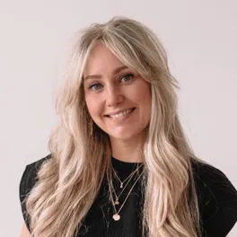

Glas. Dezelfde stad, door helder glas bekeken.
De opvolger van "The Civic Authority". Navy, oranje, Manrope en de merken blijven. Nieuw zijn matglas over zachte kleurvelden, pillvormige knoppen, grote koppen en een diepere nachtblauwe laag. De productstaat zelf wordt het beeld.
Wat er verandert ten opzichte van nu
- Glas mag op elk zwevend of overlappend vlak, niet alleen op de nav.
- Nacht (#00122e) en Diep (#001a4a) komen erbij: meer donkerblauw, gericht ingezet.
- De zon wordt een gloed in een kleurveld. Eén per view blijft de regel.
- De skyline verdwijnt; de hero toont het product en de footer wordt rustig glas of nacht.
- Track-merken (A2, B1, KNM) worden groter en vaker gebruikt, als ankers.
- Hoeken van 4px naar 16–28px; knoppen worden pills.
Zes regels. De rest volgt daaruit.
Elke beslissing op deze pagina is terug te voeren op een van deze zes. Als een nieuw scherm er één breekt, is het scherm fout of de regel, en dan schrijven we dat op.
Het product is het beeld
Geen illustraties of stockfoto's in de hero. Een echte vraag, een aftelkaart of een audiospeler, zwevend op glas.
Glas zweeft, wit staat
Glas alleen waar iets óver iets anders ligt. Inhoud die gewoon in de flow staat, is een wit vlak.
Eén gloed per view
Het oranje is een wijzer. Of een gloed in het veld, of één oranje knop. Nooit twee.
Diep blauw draagt gewicht
Nacht en Diep markeren wat telt: vandaag, de prijs, de examendag. Niet als decor.
De track is het anker
A2, B1, KNM en ONA hebben elk een vast merk. Overal waar je kiest of koopt, staat het merk, groot.
Leesbaarheid wint van sfeer
Tekst staat nooit op het drukke deel van een veld. Blauw op blauw, grijs op een verloop: dan gaat er wit of glas onder, of de tekst verhuist. Altijd minimaal 4,5:1, gemeten tegen het donkerste punt eronder.
Meer blauw, in zeven tinten.
De oude palette had één navy en een licht grijs. Glas krijgt een volledige blauwe ladder: twee nieuwe donkere tinten onderaan voor gewicht, drie lichte bovenaan voor de velden. Oranje en klei blijven precies waar ze nu zijn.
De blauwe ladder
Van nacht naar nevel--nacht #00122eFooter, prijsband, vandaag-kaart--diep #001a4aGlas-op-donker, skyline--navy #002b6dKoppen, knoppen, track-tegel--navy-2 #1d428aHover, velden--hemel #5d7fd6Veld-midden--waas #9db8ffVeld-licht, focus op donker--nevel #c9d6f2Veld-basisWarm, oppervlak en inkt
Ongewijzigd, behalve de tinten--oranje #fe762cDe wijzer. Gloed, één CTA, het accent in een merk.
--klei #a24000Oranje als tekst. Tips en aandacht, niet meer voor goed.
--goed #2b7a5c · ink #1c5a42Nieuw. Goed, gehaald, in orde. Altijd met een vinkje.
--goed-tint #e2f1e9Achter goed-tekst: 6,9:1.
--klei-tint #fcecddAchter klei-tekst. Tip-blokken.
--fout #ba1a1aAlleen fout. Altijd met een X-icoon.
--mist #eef2f8Pagina-basis. Was #f8f9fb: nu iets blauwer.
--mist-2 #e3e9f3Sectie-trede. De grens tussen blokken.
--wit #ffffffKaart. Inhoud die in de flow staat.
--ink #0b1a3a · -2 #4c5874 · -3 #6f80a8Tekst, gedempt, tweede koprgel.
De verhouding
Hoeveel van elk, op een gemiddelde paginaOranje blijft onder de 2%. Dat is wat het een wijzer houdt.
Contrast dat we garanderen
WCAG 2.2 AA, gemetenLeesbaarheid op een veld
Regel 06 · gaat boven sfeerLezen A2, examen 3
Je was bij vraag 11. Ga verder waar je was.
Lezen A2, examen 3
Je was bij vraag 11. Ga verder waar je was.
Lezen A2, examen 3
Je was bij vraag 11. Ga verder waar je was.
Kleurvelden
Het "foto"-materiaal van GlasGroter, strakker, met een stille tweede regel.
Manrope blijft voor koppen en Public Sans voor tekst. De displaymaat gaat van 56 naar 96px, met strakkere spatiëring. Nieuw is een tweede regel in gedempt blauw en lichter gewicht. Voor examenfeiten komt er een monolabel bij: Reddit Mono, alleen in hoofdletters en klein.
Dezelfde opbouw, tijd en vraagsoorten als bij DUO. Op de examendag verrast niets je meer.
Bij Lezen krijg je korte teksten uit het dagelijks leven: een brief van de gemeente, een advertentie, een bericht op school. Bij elke tekst beantwoord je een of meer meerkeuzevragen.
Een score is oefenfeedback, geen officieel DUO-resultaat.
Zacht van buiten, strak van binnen.
Grote vlakken krijgen grote hoeken, en wat erin ligt steeds kleinere. Diepte komt uit drie dingen: een tredewissel, glas, en één getinte zweefschaduw. De no-line rule blijft: geen 1px-rand voor secties.
Hoekradius
Binnen = buiten − paddingRuimte
Basis 4 · secties 88 desktop / 64 mobielDiepte
Vier lagenGlas heeft altijd iets nodig om op te liggen.
Glas zonder kleurveld eronder is een grijze kaart. Daarom komen glas en veld altijd samen. Het glas bestaat uit vier lagen: 72% wit, 24px blur met 1.5 verzadiging, een witte bovenrand van 1px en een getinte schaduw.
rgba(255,255,255,.72) · blur 24 · saturate 1.5
rgba(255,255,255,.08) · blur 24
Geen schaduw. Hover krijgt de zweefschaduw.
A2, B1, KNM krijgen het podium.
De drie lagen blijven precies zoals ze zijn: track-merken op navy, categoriemerken op licht, lucide voor functies. Wat verandert is hoe groot en hoe vaak. Een track-merk staat voortaan op 72 tot 120px op elke plek waar je een module kiest of koopt, op een veld van zijn eigen kleur.
Track-merken · vastgelegd
Label + trede · vlak navy · één oranje deelElk merk heeft dezelfde bouw: de naam linksboven, eronder één regel die zegt wat het is. Bij A2 en B1 het niveau, bij KNM de Nederlandse stad, bij ONA de richting naar werk. Het kompas is bewust klein en dun: het ondersteunt het label, het neemt het niet over.
Maten en ondergrond
In de gekozen variant · ondergrens 28pxCategorie-iconen · vastgelegd
Phosphor gevuld · lichte tegel · @phosphor-icons/reactDrie lagen, één taak per laag
Ongewijzigd uit CLAUDE.md §7Track · welke module?
Iets met een prijs en een examendatum. Altijd op navy, of onDark op donker.
Categorie · welk onderdeel?
De oefening ín een track. Altijd op de lichte tegel.
lucide · wat doet dit?
Elke knop, pijl en sluitknop. 2px lijn, 18px, kleur van de tekst.
Alles is een pill. Alles reageert op een druk.
Vijf knopsoorten, drie maten. Elke knop heeft hover, focus-visible en een druk naar 0.97. De oranje knop is de enige die met een gloed concurreert, dus er staat er nooit meer dan één in beeld.
Staten
Hover · focus · druk · uitKeuzes
Keuzetegel · tab · filter · instellingen — ze werkenOp welk niveau doe je examen?
Keuzetegel. Het merk maakt de keuze herkenbaar voordat je leest.
Velden
Tab en filter
Tab · twee gelijke keuzes, met een tellingGekozen is een witte vulling met een navy ring, niet een volle navy pill. Zo blijft navy voor de ene knop die iets doet.
Instellingen
Drie soorten dicht zien er drie keer anders uit.
Een examenslot kan om drie redenen niet open: nog niet gepubliceerd, niet in je pakket, of al gehaald. Die moeten van elkaar te onderscheiden zijn zonder te lezen. Goed is groen, fout is rood, en een icoon draagt de betekenis voor wie de twee niet uit elkaar houdt.
Badges
Pill · 28pxHet vertrouwensmerk
Eén per pagina
Nagekeken door Amber van der ZalmNT2-gecertificeerd docent Gecontroleerd door een NT2-docentExamenkaart · ook het slot
Lezen A2 · 10 oefenexamens · zeven statenAntwoordopties · vastgelegd: rij
Kiezen · nakijkenDe hele rij is de knop. De letter staat in een cirkel; gekozen wordt de cirkel navy en de rij krijgt een ring. Werkt ook voor lange antwoorden.
Meldingen, laden, leeg
Toast · skeleton · lege staatNog geen examen gemaakt
Begin met oefenexamen 1. Dat is gratis, en je ziet daarna per vraag wat je goed had.
De bouwstenen van de site.
Elk component hieronder vervangt een bestaand component in components/site of components/horizon. In het overzicht onderaan de pagina staat welk component welk vervangt.
Navigatie
Glas-pill · vervangt NavTrack-kaart
Vervangt SkillCard op de homepageTaal A2
Lezen, Luisteren, Schrijven en Spreken. Het niveau voor de meeste inburgeraars.
Taal B1
Voor wie op B1 examen doet. Luisteren B1 volgt later.
KNM
Kennis van de Nederlandse Maatschappij, in acht thema's.
ONA
Je portfolio voor Oriëntatie op de Nederlandse Arbeidsmarkt.
Op de kaartkop alleen Gracht, Nevel of Dageraad. KNM krijgt hier de gloed, omdat er op deze rij anders geen oranje knop staat.
Docent, review, vergelijking
Vervangt TeacherCard · ReviewCard"[Een echte Trustpilot-review van knmoefenen.nl, letterlijk overgenomen.]"
Review op Trustpilot · knmoefenen.nl, onze zustersite"Ik schrijf en controleer elke opgave zelf, met de exameneisen van DUO ernaast."
- AI helpt met de eerste versie. De docent beslist.
- Niets gaat online voordat Amber het heeft nagekeken.
- Elk getal heeft een bron bij DUO.
- Wat AI genereert, gaat direct online.
- Niemand kijkt het na.
- Soms staat in de voorwaarden dat ze niet instaan voor de juistheid.
Kleine onderdelen uit deutschtest üben
Metachip · niveauschaal · zegel · kruimelpadBij ons zijn de "zegels" van Nachtzug de track-merken zelf. A1 staat alleen in de schaal, nooit als product.
Scorezegel. Navy boog bij gehaald, klei bij nog niet. Het streepje is onze oefengrens. DUO maakt zijn cesuur niet openbaar, en het zegel zegt dat er ook niet bij.
Stat-tegels en fotokaarten
Vervangt DeepDive-stats · KennisbankCardsoefenexamens per onderdeel, met dezelfde tijd als DUO
woordkaarten met geluid, in acht thema's
De inburgering van begin tot eind
Pijlergids · 12 minKNM in acht thema's
KennisbankUitleg-blok · "Hoe het werkt"
Vervangt FlowBlock op /platform · Nachtzug feature panelJe schrijft. De criteria van de docent kijken mee.
Elke opdracht Schrijven en Spreken wordt nagekeken op de criteria die Amber heeft opgesteld. Een taalmodel past ze toe; je krijgt per criterium een score van 0 tot 3.
FAQ en cookiemelding
Vervangt FaqAccordion · Nachtzug consentIs het eerste oefenexamen echt gratis?
Ja. Met een gratis account doe je oefenexamen 1 van elk onderdeel dat online staat.
Lijken de examens op die van DUO?
Ze hebben dezelfde opbouw, tijd en vraagsoorten. De opgaven zelf schrijven we zelf.
Kan ik maandelijks opzeggen?
Ja, in je profiel. Je houdt toegang tot het einde van de maand.
Prijskaart
Echte prijzen uit lib/pricing.ts- Alle 10 oefenexamens van één onderdeel
- Lessen, woorden en taalregels erbij
- Maandelijks opzegbaar
- Alle vier de taalonderdelen
- Bijna vier voor de prijs van drie
- KNM los erbij voor €9,95
Oefenen of leren. Die keuze staat bovenaan.
Wie inlogt, wil één van twee dingen: een oefenexamen maken of iets leren. Het dashboard zet die twee naast elkaar als deuren, elk met de plek waar je was. Daaronder je cijfers, en per onderdeel hoe ver je bent met allebei. Namen en cijfers zijn voorbeelddata.
Dashboard
Vier modules · twee widgets · de zijbalk blijft zoals hij isGoedemiddag, Samira.
Waar wil je vandaag mee verder?
Eén scherm, vier kaarten: de vier dingen die we verkopen. Op elke kaart één zin over waar je bent en één knop. Alleen de kaart waar je het laatst bezig was, krijgt de oranje knop. Rechts twee rustige widgets; meer niet. De cijfers en de leerroute staan een klik dieper, op de onderdeelpagina.
Stat-tegels
Getal + een klein beeld van wat het getal betekentElke tegel heeft een vlak, een icoon in een tegeltje, het getal groot en eronder een klein beeld: een lijn, tien vakjes, vijf blokken, zeven dagen. Eén tegel per rij mag op Nacht staan.
Slaagkanslabel
Vervangt de grote SlaagkansGauge · past overalHet rondje is een wijzer van een halve cirkel: hoe verder hij staat, hoe beter. Eén woord erbij, en wat dat woord betekent. Het blijft oefenfeedback; de banden komen uit de regels die er nu zijn, niet uit een AI-oordeel.
Examenspeler
Glas alleen in de kop · vraag op witToeslagen vraag je aan bij Dienst Toeslagen, ook als je huurt van een corporatie.
Wat er nu in het portaal staat, in Glas.
Elk element hieronder bestaat vandaag al in app/[locale]/(app), met dezelfde staten en dezelfde tekst. Alleen de vorm is nieuw. Cijfers zijn voorbeelddata.
Zijbalk met groepen en de mobiele tabbalk
PortalSidebar · AppShellDe oranje "+" is de enige oranje vlek in het portaal-chroom. De actieve tab krijgt een ring in plaats van oranje tekst.
Onderdeelpagina · vastgelegd: twee banen
Eerst leren, dan oefenen · voorbeeld zonder pakketLezen
Taal A2 · 25 vragen · 65 minuten · meerkeuze
Leren
53 lessen in vijf blokken · eerst ditTwee kolommen, genummerd: 1 Leren, 2 Oefenexamens, met een pijl ertussen. De slaagkans staat groot in de kop. Zonder pakket staat wat dicht is gewoon in beeld, met één oranje knop om het te openen.
Profiel en abonnement
dashboard/profielVijf examens, één schil.
De schil komt van deutschtest üben: een kruisje, een gesegmenteerde voortgangsbalk en een klok in één glazen balk erboven, en een vaste actiebalk eronder. Daartussen staat per onderdeel een eigen werkvlak. De vraag zelf staat altijd op wit.
Intro en de schil
ExamIntroScreen · TimerBar · exam-navOefenexamen 3
De balk deelt het examen op zoals DUO het opdeelt. Onder 5 minuten wordt de klok rood: 4:48
Lezen
StimulusPane + McqQuestion · twee kolommen, op mobiel een schakelaarUw nieuwe identiteitskaart
Beste mevrouw El Amrani,
Uw identiteitskaart is klaar. U kunt de kaart ophalen op het stadskantoor. Dat kan alleen als u eerst een afspraak maakt via onze website. Neem uw oude kaart mee.
Met vriendelijke groet,
Burgerzaken
Nieuw uit Nachtzug: de brief als papier (crème, een halve graad gedraaid) en de markering na het nakijken, waar in de tekst het antwoord stond.
Luisteren
AudioPlayer · glas op Gracht · vrij en strikt (B1)KNM
Losse vraag · voorlezen met meelezenSchrijven
WritingTask · e-mail, formulier, tekstJe buurvrouw heeft je pakketje aangenomen. Schrijf haar een e-mail.
- Bedank haar.
- Vraag wanneer je het kunt halen.
- 3Vertel wat je haar terug wilt geven.
Punten vink je zelf af, zoals in Nachtzug. Het telt niet mee voor de score.
Dank je wel dat je mijn pakketje hebt aangenomen. Wanneer ik kan het komen halen? Ik ben morgen de hele dag thuis.
Spreken
SpeakingTask · plaatjes · opnemen · live meelezenPlaatjes komen uit onze eigen Storage, zoals nu. Hier staan kleurvelden als plaatshouder.
Ik kies plaatje twee, omdat ik graag fiets naar mijn werk…
De hoofdactie is één grote navy pill met tekst erop: "Start opname". Tijdens het opnemen blijft hij op dezelfde plek staan, wordt wit en toont de tijd in de ring. Geen puls, geen oranje vlak; alleen het kleine oranje stipje zegt dat er opgenomen wordt.
Nakijken met de rubric
RubricFeedback · na Schrijven en SprekenJe bedankt haar en vraagt wanneer je het pakketje kunt halen.
Goed. "Terug willen geven" mist nog.
Let op de woordvolgorde na "wanneer".
Nakijken · terwijl het gebeurt
Schrijven en Spreken · speelt af als je ernaartoe scroltDank je wel dat je mijn pakketje hebt aangenomen. Wanneer ik kan het komen halen? Ik ben morgen de hele dag thuis. Ik wil je graag een taart geven.
Groetjes, Samira
Wat je ziet, is wat er gebeurt: eerst gaat er een lichtstreep over de tekst (of de opname wordt uitgeschreven), dan vallen de criteria van de docent één voor één op hun plek, en pas daarna komt het totaal. Geen draaiend wieltje zonder uitleg. Met "beweging verminderen" aan staat meteen de uitslag.
Overzicht, inleveren, nakijken
Nachtzug OverviewSheet · ConfirmSheet · GradingScreenExamen inleveren?
Je hebt 23 van de 25 vragen beantwoord. Daarna kun je niets meer veranderen.
2 van 4 opdrachten nagekeken
Uitslag
MCQ-resultaat · per tekstsoort · ConceptAdvice · jouw antwoordenLezen A2 · examen 3
Elke streep is een vraag: gevuld is goed, leeg is fout. Het oranje streepje is onze oefengrens van 60%. DUO maakt zijn eigen cesuur niet openbaar.
Leren is rustiger dan toetsen.
In de lessen geen klok en geen gesegmenteerde balk. Wel de ingesproken uitleg als donker paneel, het lesplaatje stap voor stap, en oefeningen die meteen zeggen of het goed is.
Les · eerst leren, dan oefenen in een venster
Zoals Coursera · de uitleg blijft rustig, de oefening krijgt een eigen ruimteHoeven niet en moeten niet
Niet hoeven betekent: het is niet nodig. Niet moeten betekent: doe het liever niet. Ze lijken op elkaar, maar in het examen kost het verschil je de vraag.
De les is alleen lezen en luisteren: uitleg, twee voorbeelden, één regel om te onthouden. Onderaan één knop. De oefening opent in een eigen venster bovenop de les, met een voortgangsbalk en één vraag tegelijk. Sluit je hem, dan sta je weer precies in de uitleg. Probeer het: "Start oefening" werkt.
Ingesproken uitleg en lesplaatje
LessonNarration · LessonVisual (zinslots)Na "want" blijft de zin gewoon. Na "omdat" gaat het werkwoord naar het eind van de zin.
De oranje rand is de stap die nu wordt uitgelegd. Eén accent per stap.
Oefening in een les
ExFrame · gap_choice · woordorde · goed / nog niet goedIn "ik ziek ben" staat het werkwoord aan het eind. Dan hoort er omdat.
Na omdat staat het werkwoord aan het eind.
Naspreken en woordkaart
LessonRecorder · WordDeckVier staten, geen groen. "Nog leren" is rood omdat het een fout is die terugkomt.
ONA · portfolio
Overzicht · inleveren-check · resultaatkaarten · eindgesprekONA toont geen ValidationChip zolang Amber de kaarten niet heeft nagekeken. De "Concept"-badge hierboven is die melding.
Waar iemand beslist, staat de prijs erbij.
De pakketkiezer, de prijsvergelijking, de gratis proef met de vervaagde score en de tijdlijn. Op elk scherm met een betaalknop staan de betaalmerken direct onder die knop.
Pakketkiezer met totaal
ModulePicker · bundelstrook · vaste totaalbalkHet rekenvoorbeeld klopt met lib/pricing.ts: drie modules €29,85, de bundel €29,95.
Vergelijking
/premium · drie kolommen · schuift op mobielKNM is een eigen module van €9,95 per maand en zit niet in een niveau. Een vinkje is groen in een rondje, "niet inbegrepen" is een grijs streepje, geen rood kruis: niets aan het gratis plan is fout. De kolom die we aanraden loopt als één navy baan van boven naar beneden.
Gratis proef: uitslag achter het e-mailscherm
FreePracticeEngine · score vervaagd · de overslaan-link blijftGoed. Toeslagen vraag je aan bij Dienst Toeslagen.
Tijdlijn-maker, inloggen, PDF-gids
Wizard · gantt · AuthPanel · PdfGateOefen je hele inburgering met opgaven van een NT2-docent.
Aanmelden met GoogleDoor je aan te melden ga je akkoord met de voorwaarden en het privacybeleid.
Download de gids als PDF
Je kunt je altijd afmelden.
Hele secties, klaar om te stapelen.
Een pagina is een stapel van deze blokken. Tussen twee blokken wisselt de ondergrond van trede, nooit met een lijn. Licht, licht, donker, licht is het ritme. Twee donkere blokken direct na elkaar mag niet.
Hero · product als beeld
Dageraad · vervangt HorizonHero op de homepageInburgeringsexamen oefenen. A2, B1 en KNM.
Dezelfde opbouw, tijd en vraagsoorten als bij DUO. Op de examendag verrast niets je meer.
Trackband
Mist-2 · de vier tracks onder de heroPrijsband
Nacht · het ene donkere blok van de homepageEén onderdeel of een heel niveau. Maandelijks opzegbaar.
Een DUO-examen kost €50 per onderdeel. Oefenen kost per maand minder dan een kwart daarvan.
Afsluiter
Nevel · één oranje knop, dus geen gloedHet eerste oefenexamen is gratis.
Maak een account en doe examen 1 van elk onderdeel. Daarna weet je waar je staat.
Footer · vastgelegd
Licht glas · de vier merken onder het logoLezen moet rustig voelen.
De blog krijgt het veld Nevel: bijna wit, met een zweem. Glas alleen op de uitgelichte kaart. Het artikel zelf staat op wit, met een smalle kolom, een inhoudsopgave en vaste blokken voor feiten, tips en de vertaalmelding.
Overzicht
Uitgelicht + stapel + glazen rasterGidskaart
Gidsen dragen een categoriemerk, geen fotoDe inburgering van begin tot eind
Van de brief van DUO tot je diploma, in drie fasen.
Wonen in Nederland
Huren, toeslagen en je buren, zoals KNM het vraagt.
Zo maak je je ONA-portfolio
De acht resultaatkaarten en het eindgesprek.
Artikel
Kop · vertaalmelding · tekst · blokkenExamen Lezen inburgering A2: format, tijd en tips
Wat je krijgt, hoeveel tijd je hebt en hoe je de teksten aanpakt. Met de bron van DUO bij elk getal.
Wat je krijgt
Bij het examen Lezen A2 lees je korte teksten uit het dagelijks leven. Denk aan een brief van de gemeente, een advertentie of een bericht van school. Bij elke tekst horen een of meer vragen.
Lees eerst de vraag
Je hoeft niet elk woord te begrijpen. Lees eerst de vraag en zoek dan in de tekst het stuk dat erbij hoort. Zo bespaar je tijd voor de lastige teksten.
Onderstreep in je hoofd de woorden niet, alleen en altijd. Daar zit vaak het verschil tussen twee antwoorden.
Wil je weten hoe het voelt? Het eerste oefenexamen Lezen is gratis met een account. Bekijk de oefenexamens.
Artikelpagina
Beeldkop · de titel op glas over de fotoDe 8 fouten die je maakt bij het examen Schrijven A2
Bij Schrijven krijg je vier opdrachten. Je schrijft een e-mail, vult een formulier in of schrijft een korte tekst. De meeste punten gaan niet verloren aan moeilijke woorden, maar aan kleine dingen.
Hieronder staan de acht fouten die ik het vaakst zie, met per fout hoe je hem voorkomt.
Gids als PDF-brochure
Download naast de webversie · A4 · voorbeeldDe inburgering van begin tot eind
Van de brief van DUO tot je diploma, in drie fasen.
De drie fasen
Jouw checklist
Wat het examen A2 vraagt
| Onderdeel | A2 |
|---|---|
| Lezen | 25 vragen · 65 min |
| Luisteren | 25 vragen · 45 min |
| Schrijven | 4 opdrachten · 40 min |
| Spreken | 16 opdrachten · 35 min |
inburgeringoefenen.nl/oefenen
De brochure is dezelfde gids in een papieren jasje: omslag op Dageraad met de sluier, daarna wit met dezelfde blokken als op de site (in het kort, stappen, tabel met bron, tip van de docent) en op de laatste pagina een QR-code naar het gratis oefenen. De platte tekst is de machineleesbare versie. Het QR-blok is hier een plaatshouder. Of de download achter een e-mailadres staat (PdfGate), beslis jij.
Bouwblokken van een gids
data/guides/kit.ts · GuideToc · samenvatting · docentnotitie · stappen- Je hebt drie jaar voor je inburgering.
- Die termijn start op de dag dat de gemeente je brief stuurt.
- Een examen kost €50 per onderdeel.
"Begin niet met het moeilijkste onderdeel. Eén gehaald examen geeft rust voor de rest."
Amber van der Zalm · NT2-docentVan de gemeente, met de start van je termijn.
Samen met de gemeente.
Bij DUO, per onderdeel.
| Onderdeel | A2 | B1 |
|---|---|---|
| Lezen | 25 vragen · 65 min | 35 vragen · 110 min |
| Schrijven | 4 opdrachten · 40 min | 12 opdrachten · 100 min |
| Spreken | 16 opdrachten · 35 min | 8 opdrachten · 30 min |
Mag ik een woordenboek gebruiken?
FAQ binnen een artikel gebruikt dezelfde vorm als op de homepage.
Snel, en alleen als het iets uitlegt.
Alleen transform en opacity, nooit transition-all. Alles onder 300ms, behalve grote verschijningen op marketingpagina's. Bij prefers-reduced-motion staat alles stil. Klik op de vakken hieronder om de curves te zien.
cubic-bezier(.23,1,.32,1)Voor alles wat binnenkomt of op een klik reageert.
cubic-bezier(.77,0,.175,1)Voor iets dat al in beeld is en van plek wisselt.
cubic-bezier(.22,1,.36,1)Schakelaars, het segment, de kaart die omhoog komt.
| Wat | Duur | Curve | Hoe |
|---|---|---|---|
| Knop indrukken | 160ms | ease-out | scale(.97) |
| Hover op kaart | 260ms | ease-out | translateY(−3px) + zweefschaduw |
| Segment, schakelaar | 260–300ms | veer | translateX |
| Toast, menu | 200ms | ease-out | opacity + scale(.97) vanaf de trigger |
| Antwoord nakijken | 0ms | — | Direct. Feedback mag nooit wachten. |
| Toetsenbord in de speler | 0ms | — | Geen animatie. Je doet het honderd keer. |
Animatiebibliotheken · ons advies
Onderzocht oktober 2026motion/reactDe React-bibliotheek voor UI-beweging: binnenkomen en weggaan, layout-animaties, veren, gebaren. Ongeveer 30 kB; met LazyMotion de helft.
Voor: Kaarten die openen, het venster van de oefening, tabs, toasts.tw-animate-cssWat met een transition of keyframe kan, doen we zonder JavaScript. tw-animate-css staat al in package.json.
Voor: Hover, focus, indrukken, skeleton, de nakijkstreep.document.startViewTransition()Ingebouwd in de browser. Werkt in Chrome, Safari 18+ en Firefox 144+ voor overgangen binnen een pagina. Zonder steun gewoon geen animatie.
Voor: Wisselen tussen examens en lessen, een kaart die een pagina wordt.@number-flow/reactGetallen die rollen in plaats van springen, met de opmaak van Intl.NumberFormat. MIT.
Voor: Scores, punten, dagen tot je examen, de prijs in de pakketkiezer.@formkit/auto-animateEén regel code, en lijsten die veranderen schuiven netjes. Minder dan 3 kB.
Voor: Filteren op de blog, examenlijst, woordkaarten.gsapSinds 2025 helemaal gratis, met alle plugins. Sterk in tijdlijnen en scrollverhalen, maar zwaar voor wat wij nu nodig hebben.
Voor: Alleen als we een scrollend verhaal op de homepage willen.Animaties voor het product
Klik op "Speel af" · elk één keer, nooit in een lusHet skelet vervaagt in de echte kaart, met een korte blur. Nooit een sprong.
De cijfers rollen naar hun plek. Je ziet dat er iets uitgerekend is.
De rij wordt groen, de letter veert even op, het vinkje tekent zich en er springen een paar vonkjes af, met een lichtstreep over de rij. Samen 700ms, daarna staat het stil. Kleiner dan bij Gehaald, zodat dat moment het grootste blijft.
Een korte, kleine schud: 4px, 300ms. Zegt "nee" zonder te straffen.
De score tekent zich in als hij in beeld komt. Eén keer.
De examens verschijnen kort na elkaar, 30ms per stuk. Niet allemaal tegelijk.
Het enige feestje: een groene schijf die met een veer binnenkomt, een ring en een paar vonken. Alleen bij een gehaald examen.
Klik op de kaart: hij groeit uit tot de detailweergave. De browser doet het werk.
Komt van onder, gaat na 3 seconden weer weg naar onder. Zelfde richting erin en eruit.
Logo als laadstaat · vastgelegd: opbouw
Mag herhalen · pas na 400ms · stil bij "beweging verminderen"Eerst groeit de streep van onder naar boven, dan springt de zon erbij met een kleine veer, en het logo vervaagt om opnieuw te beginnen. Eén ronde duurt 1,9 seconden. Het is precies de SVG van LogoMark, dus er komt geen tweede tekening bij.
Elk element van Nachtzug, en waar het hier staat.
Alles uit de inventaris van deutschtest üben is overgenomen, op vier dingen na. Testimonials zijn daar verboden, dus die nemen we niet over. Hun vakkleuren per onderdeel nemen we niet over, omdat wij de categoriemerken hebben. Host Grotesk wordt Manrope. Hun logo blijft van hen.
| Nachtzug | Wat het is | Bij ons |
|---|---|---|
| Photo field + noise | Wazige kleurvlekken met korrel als "foto" | Kleurvelden: Dageraad, Gracht, Nevel, Nacht |
| .glass / .nz-app | Matglas met witte bovenrand en getinte schaduw | Materiaal: licht en donker glas |
| SiteNav | Logo, tekstlinks, taalpill, kleine CTA | Glas-pill nav |
| HeroScene (telefoon + aftellen) | Product als hero, zwevende kaarten | Hero · product als beeld |
| VButton · ExamButton | Pills cta / ink / ghost / light, 36–52px | Vijf knoppen, drie maten |
| MetaChip · SkillChips | Glazen pill met icoon | Metachip · badges |
| LevelScale · LevelPath | A2 / B1-schaal, pad naar een hoger niveau | Niveauschaal en niveaupad met ExamMark |
| LevelSeal · ScoreSeal | Boog met score en grensstreep | Scorezegel · uitslag |
| ExamTicket | Aftelkaart met scheurlijn en vier onderdelen | Examendag-ticket |
| PartCard · TestCard · ExamHub | Glazen kaart, tegel, pijl, "bald" gestreept | Track-kaart · dashboardkaart |
| Audience card · Closing CTA | Fotoveld-kaart, gecentreerde afsluiter | Fotokaart · afsluiter |
| Feature panel · five-dot separator | Tekst naast een mock, stippen tussen panelen | Uitleg-blok en scheiding |
| PlatformDemo (tabs + venster) | Interactieve demo van het examen | De schil, zelfde opbouw |
| ExamShell top bar | X, gesegmenteerde voortgang, TimerChip | Examenbalk, rood onder 5 min |
| Answer states · Radio · Mark | idle / selected / right / solution / wrong | Antwoordopties: groen en rood |
| GapItem · MatchItem · TrueFalse | Gat-pills, lade, kaarten | Les-oefeningen: gap, woordorde |
| ExamAudio (112px ring) | Ring als voortgang, sprekers met stip | Luisteren, plus strikte B1-modus |
| ReadingLayout + mark | Tekst | Taken, papier, markering | Lezen met papieren brief |
| WritingTask | Taakkaart met afvinkpunten, telling | Schrijven met e-mailvelden |
| SpeakingTask · .nz-rec | Microfoon wordt een gloeiend vierkant | Spreken: oranje opnameknop |
| OverviewSheet · ConfirmSheet | Onderblad met nummers, bevestiging | Overzicht en inleveren |
| FeedbackSheet · PartResultCard · NextStep | Uitleg, criteria, volgende stap | Rubric, uitslag, ConceptAdvice |
| EmailGate · checkbox | Glazen gate, invoer met focusring | Proef-uitslag · invoer |
| Preise · plan cards · Gratis gestreept | Kaarten, "Empfohlen", gratis met rand | Pakketkiezer, vergelijking, gratis kaart |
| FAQ · consent banner | Accordeon, cookiekaart rechtsonder | FAQ en cookiemelding |
| PageHeader · Byline · prose | Kruimelpad, auteur, 68ch tekst | Artikel |
| Week-streak mock | Dagcirkels in het dashboard | Nog niet: komt in de dashboardronde |
| Testimonials | Verboden in hun DESIGN.md | Wij tonen echte Trustpilot-reviews, gelabeld |
Wat blijft, wat verandert, en wat we kozen.
Glas v1.0 staat sinds 14 oktober 2026 in DESIGN_SYSTEM.md. Per scherm dat wordt omgebouwd geldt Glas; schermen die nog niet zijn omgebouwd volgen tot dan "The Civic Authority". Eerst de tokens in globals.css, dan component voor component.
Blijft
- No-line rule. Grenzen komen uit een tredewissel, focus is een inset-ring.
- Eén oranje per view. Alleen heet het nu een gloed in plaats van een zonneschijf.
- Drie icoonlagen met de tegelinversie: navy voor tracks, licht voor onderdelen, lucide voor functies.
- Eén LogoMark. Streep en zon; de laadanimatie gebruikt dezelfde SVG.
- Geen illustraties. Een kleurveld is een verloop en geen tekening, dus het mag.
- Manrope en Public Sans. De tokens voor kleur, oranje en klei blijven gelijk.
Verandert
- Glas mag op elk zwevend vlak, niet alleen op de nav. Nooit glas op glas.
- Twee nieuwe donkere tinten (Nacht, Diep) en drie lichte (Hemel, Waas, Nevel).
- Mist #eef2f8 vervangt surface #f8f9fb als paginabasis.
- Hoeken gaan van 2–16px naar 8–28px, en knoppen worden pills.
- De skyline verdwijnt. De hero toont het product op een veld; de footer wordt licht glas.
- Groen is goed. #2b7a5c met een vinkje; fout blijft rood met een kruis. Klei is alleen nog aandacht.
- Categorie-iconen uit Phosphor (gevuld) op de lichte tegel, in plaats van eigen tekeningen.
- Track-merken: label + trede. Vlak navy, één oranje deel.
- Leesbaarheid gaat voor sfeer. Donkerblauw in een veld mag, met een sluier onder de tekst.
- Reddit Mono komt erbij, alleen voor labels in hoofdletters.
- Track-merken worden 64–120px op elke keuze- en koopplek.
Wat dit vervangt
Component-voor-component| Nu | Glas | Waar |
|---|---|---|
| Nav (vaste balk) | Glas-pill | components/Nav.tsx |
| HorizonHero, GradientHero | Hero op veld + productscène | components/horizon, site |
| SkillCard | Track-kaart met groot ExamMark | components/site |
| ExamMark · CategoryMark | Label + trede · Phosphor gevuld op lichte tegel | components/horizon |
| Skyline in hero en footer | Footer F1 · licht glas, geen skyline | Footer.tsx |
| Button (4px hoek) | Pill, vijf varianten | components/ui/button.tsx |
| SectionHeader met horizonlijn | Kop + gedempte tweede regel + monolabel | components/site |
| PlatformSidebar | Glas-zijbalk met track-merken | components/inburgering |
| ValidationChip / DocentSeal | Seal met foto, op glas | components/horizon/Trust.tsx |
Vastgelegde keuzes
14 oktober 2026 · door de eigenaarC · label + trede · KNM huizen · ONA klein kompas
Phosphor gevuld
A · rij
C · glas
vier modules + twee widgets
S1 · twee banen
glazen raster · artikel met beeldkop
F1 · licht glas
L2 · opbouw
rustig, met één grote knop
Nog open
Komt in een volgende rondeVolgt de huidige opbouw, met de nieuwe elementen erin.
Derde font (±18 kB) voor monolabels, of Public Sans 600 in hoofdletters.
Of de gids-brochure via PdfGate gaat of vrij te downloaden is.
docs/design/glas.html, alleen lokaal: open het bestand in de browser, het wordt nooit gedeployd · voorbeelddata is als voorbeeld gemarkeerd.